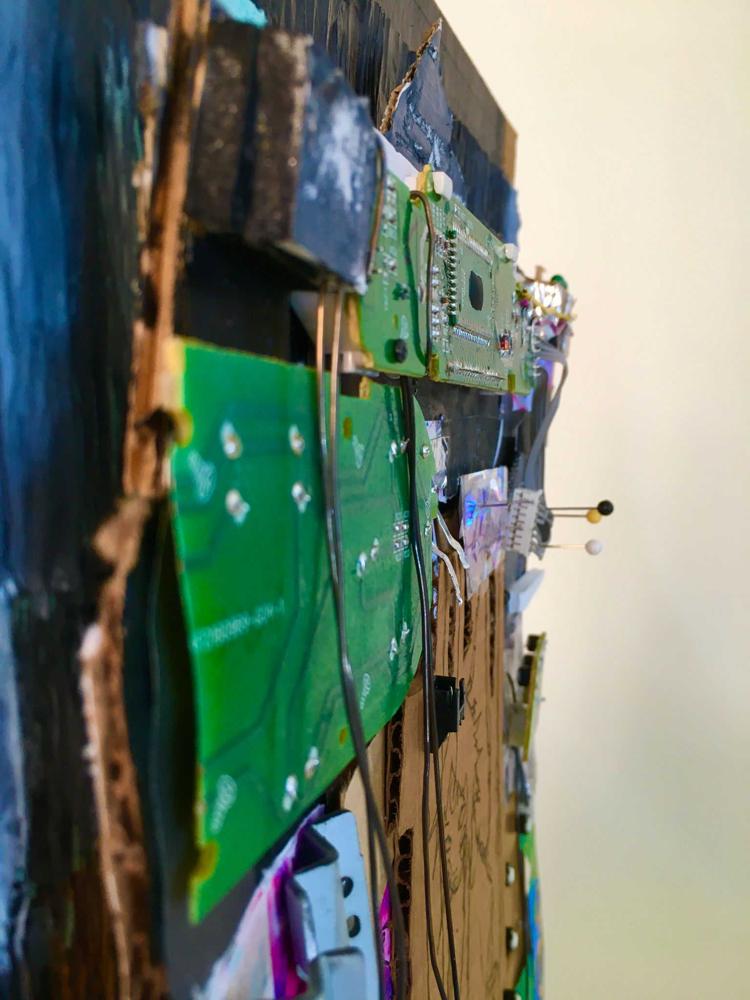
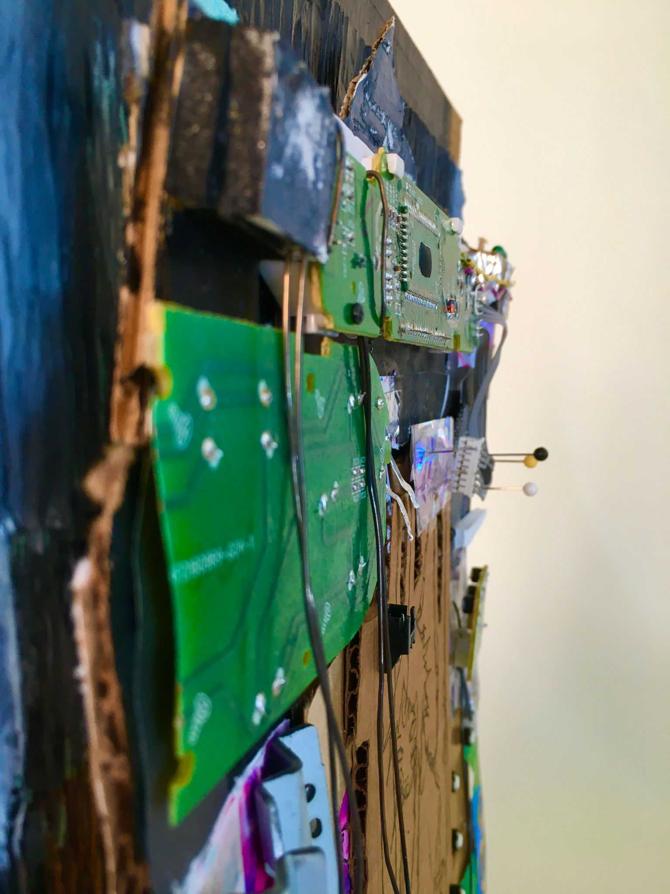

Interactive Projects

Radial Pond
2024, web browser based art using 3JS software
Interactive landscape made with 3JS and Blender, deployed online.

Face Control
2022, digital art
I started this project much younger than I am now, at a point where I was just beginning to be interested in human computer relationships. For me, this project was about how computers could aid with expressing identity, as I was thinking about this in terms of social media, profile pictures, the modification of video content, and internet based subcultures.
Sculpture
 

3d collage
2022, multimedia
I was inspired by the deviantart user @celluleneuronale in the design of the central figure for this sculpture. The most prominent thing about the artists style is their linework, which is sketchy, almost elementary. I created my own piece using bits of wire, cardboard, printed cutouts, circuit boards that I took from an old radio, and discarded plastic.

becoming plastic
2022, multimedia
This sculpture was inspired by old mac computers, and inside of the structure is a 3D printed (3D modeled) fetus. This sculpture expressed the idea of being born plastic and of geometric, lifeless objects gaining vitality.

plastic loveliness
2022, milk jug, wire
This series was a reflection on tech being inescable. The hands were designed as if holding mobile phones, although the physical form of the phone was not included. I decided to use plastic as my medium to bring out the idea of waste and consumption. Each facet of the hands was individually selected from the milk jug and glued onto the wire frame.
2D Art
kitty_cat
2023, video
An exploration of animation with a very rigorous process. This project was not intended to be deeply emotional, but independently developed its own personality throughout the process.
audio visual installation project
2024, video
View Documentation
An exploration of contrasting audio and visual mediums. The sound was constructed of a series of clips, primarily voicemail messages, of my family members who had tried to call me. The video is of the enviornment I was in, playing the pre recorded audio out loud.
I chose to film on the bridge because it symbolizes travel and transformation, and through my life I've moved a lot, and been unsure. I think by being on my own so much and confonted with the reality of who I am, people outside of me became valuable as sources of inspiration for myself, what I should be. So my messages from loved ones hit me hard, as when I listen back on this peice, I hear my identity reflected back from them, but also feel secure in their love for me even while I'm gone.

Silk Maker, 2023
2023, digital
I started this peice as the first drawing in a series of porn drawings to sell online. The peice became somewhat sad, and I wound up enjoying it as an expression of myself, growing up and becoming desensitized to the experience of being objectified.


watermark designs
2023, digital